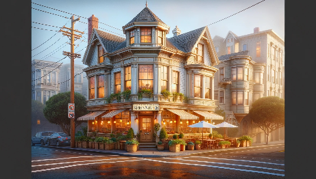
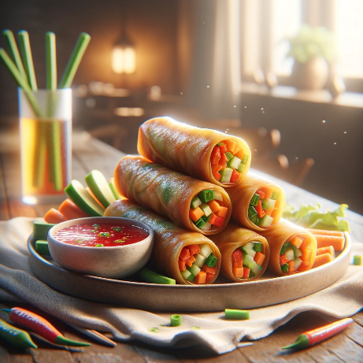
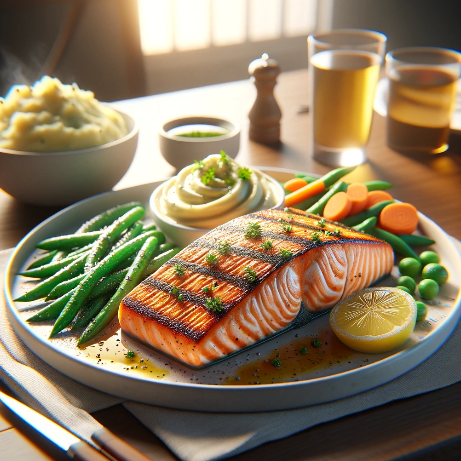
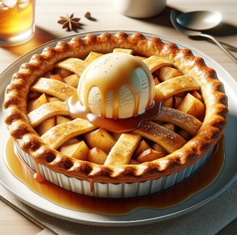
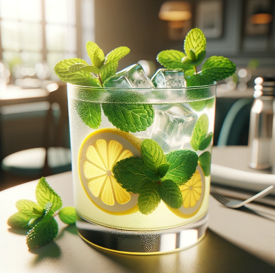
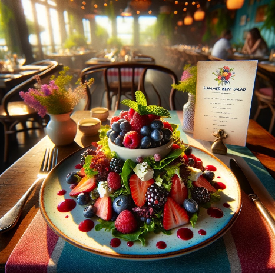
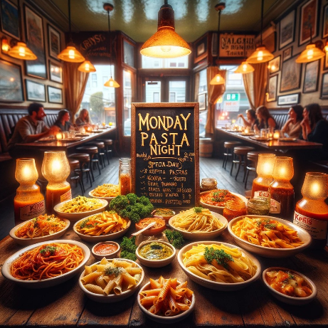

Kiri's Kitchen
Kiri's Kitchen is a cozy family-owned restaurant nestled in the heart of San Fransico. Established in 2015, it has been serving a fusion of traditional and modern American cuisnines, providing a warm, welcoming ambiance that mirros the comfort found in a family kitchen.
The restaurant values fresh, locally sourced ingredients, community engagement, and providing a delightful dining experience that goes beyond just the meal. Kiri believes in creating a place where every diner feels at home while enjoying hearty, delicious meals.

Menu
Appetizers
- Vegetable Spring Rolls - $6.95
The Vegetable Spring Rolls are crispy rolls that are filled with fresh veggies and served with a sweet chili dip.

Main Dishes
- Grilled Salmon - $18.95
The Grilled Salmon is a fan favorite with the freshly grilled salmon being served with a lemon-butter sauce, seasonal vegetables, and mashed potatoes.
- Classic Cheeseburger - $14.95
It's hard to pass up the Classic Cheeseburger with its juicy beef patty served with cheedar cheese, lettuce, tomatoes, house sauce, and with a side of fries.

Desserts
- Apple Pie - $6.95
The Apple Pie is a traditional apple pie topped with a scoop of vanilla ice cream and drizzled with caramel sauce.

Drinks
- House Blend Coffee - $3.50
The House Blend Coffe is a rich and smooth coffee blend that is freshly brewed and hot when ordered.

Seasonal Items
- Summer Berry Salad - $10.95
Available in Summer, Kiri's Summer Berry Salad which includes mixed greens with fresh berries, goat cheese, and a rasperry vinaigrette.
- Winter Squash Soup - $7.95
Available in Winter, Kiri's Winter Squash Soup is a creamy squash soup topped with roasted pumpkin seeds.

Weekly Items
- Weekly Special Pasta
Every Monday is Pasta Night at Kiri's Kitchen where you can enjoy any pasta dish at a $2 discount.
(picture from chatGPT - CCO 1.0)
★ Reviews and Ratings ★
- Sara L left a 5 star review and said "The atmosphere is so warm and inviting, and the food is absolutely delicious! The grilled salmon is a must try!
- Mike D left a 4 star review and remarked, "I love the variety in the menu. The seasonal specials keep me coming back. Kiri's Kitchen has become our weekly dining spot."
- Emma R. keft a 5 star review and attested, "The apple pie is the best I've ever had. It's the perfect blend of sweet and tart, and the crust is just right. A cozy place with friendly staff!"
Contact Info
Contact Info: (415) 555-1234
Address: 123 Cozy Lane, San Francisco, CA 94102
Hours: Open Mon-Sun 11:00 AM - 10:00 PM